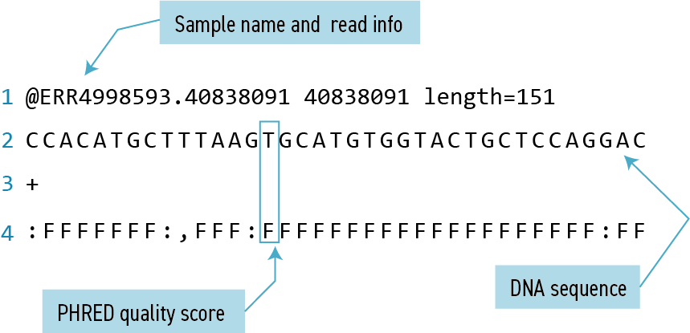
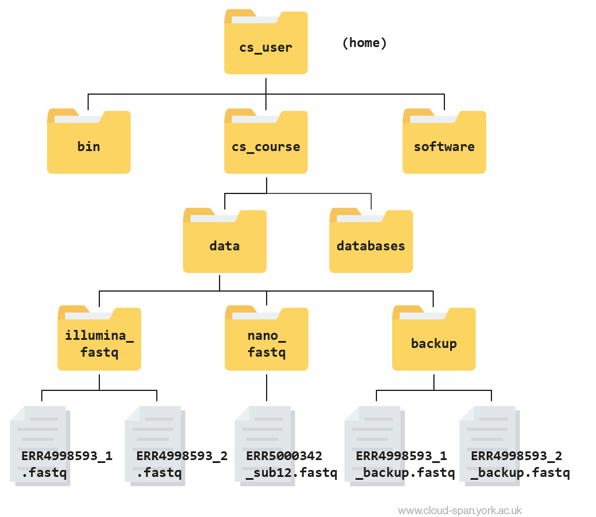

Working with Files and Directories
Working with Files
Our data set: FASTQ files
Now that we know how to navigate around our directory structure, let’s start working with our sequencing files. We are looking at the results from a short-read sequencing experiment, which are stored in our illumina_fastq directory.
Wildcards
Navigate to your illumina_fastq directory:
Code
cd ~/cs_course/data/illumina_fastqWe are interested in looking at the fastq files in this directory. We can list all files with the .fastq extension using the command:
Code
ls *.fastqOutput
ERR4998593_1.fastq ERR4998593_2.fastqThe * character is a special type of character called a wildcard, which can be used to represent any number of any type of character. Thus, *.fastq matches every file that ends with .fastq.
This command:
Code
ls ../../
ls *_2.fastqOutput
ERR4998593_2.fastqlists only the file that ends with _2.fastq.
This command:
Code
ls /usr/bin/*.shOutput
/usr/bin/amuFormat.sh /usr/bin/gettext.sh /usr/bin/gvmap.shLists every file in /usr/bin that ends in the characters .sh. Note that the output displays full paths to files, since each result starts with /.
What command would you use for each of the following tasks? Start from your current directory using a singlelscommand for each:
- List all of the files in
/usr/binthat start with the letter ‘c’. - List all of the files in
/usr/binthat contain the letter ‘a’. - List all of the files in
/usr/binthat end with the letter ‘o’. - List all of the files in
/usr/binthat contain the letter ‘a’ or the letter ‘c’.
Bonus: What would the output look like if a wildcard could not be matched? Try listing all files that start with ‘missing’.
Hint: Question 4 requires a Unix wildcard that we haven’t talked about yet. Try searching the internet for information about Unix wildcards to find what you need to solve the bonus problem.
ls /usr/bin/c*ls /usr/bin/*a*ls /usr/bin/*o
ls /usr/bin/*[ac]*
Bonus: ls: cannot access 'missing*': No such file or directory
Command History
If you want to repeat a command that you’ve run recently, you can access previous commands using the up arrow on your keyboard to go back to the most recent command. Likewise, the down arrow takes you forward in the command history.
You can also review your recent commands with the history command, by entering:
Code
historyto see a numbered list of recent commands. You can reuse one of these commands directly by referring to the number of that command.
For example, if your history looked like this:
Output
259 ls *
260 ls /usr/bin/*.sh
261 ls *R1*fastqthen you could repeat command #260 by entering:
Code
!260Type ! (exclamation point) and then the number of the command from your history. You will be glad you learned this when you need to re-run very complicated commands. For more information on advanced usage of history, read section 9.3 of Bash manual.
Examining Files — the less program
We now know how to switch directories, run programs, and look at the contents of directories, but how do we look at the contents of files?
One way to examine a file is to open the file in a read-only format and navigate through it using a program called less. The commands for navigating less are the same as the man program:
| key | action |
|---|---|
| Space | to go forward |
| b | to go backward |
| g | to go to the beginning |
| G | to go to the end |
| q | to quit |
Enter the following command from within the illumina_fastq directory:
Code
cd ~/cs_course/data/illumina_fastq
less ERR4998593_1.fastqThe contents might look a bit confusing. That’s because they are in FASTQ format, a popular way to store sequencing data in text-based format. These files contain both sequences and information about each sequence’s read accuracy.

Each sequence is described in four lines:
| Line | Description |
|---|---|
| 1 | Always begins with ‘@’ and gives the sequence identifier and an optional description |
| 2 | The actual DNA sequence |
| 3 | Always begins with a ‘+’ and sometimes the same info in line 1 |
| 4 | Has a string of characters which represent the PHRED quality score for each of the bases in line 2; must have same number of characters as line 2 |
Quality encoding: !"#$%&'()*+,-./0123456789:;<=>?@ABCDEFGHIJ
| | | | |
Quality score: 01........11........21........31........41 Quality is interpreted as the probability of an incorrect base call. To make it possible to line up each individual nucleotide with its quality score, the numerical score is encoded by a single character. The quality score represents the probability that the corresponding nucleotide call is incorrect. It is a logarithmic scale so a quality score of 10 reflects a base call accuracy of 90%, but a quality score of 20 reflects a base call accuracy of 99%.
- Open the
~/cs_course/data/illumina_fastq/ERR4998593_1.fastqfile inless. What is the last line of the file? (Hint: use the shortcuts above to speed things up)
Output
1. :FFFFFFFFFFFFFFFFFFFF:FFFFFFFFFFFFFFFF:FFFFFFFF,FFFFFFFFFFFFFFFFFFFFFFFFFF:FFFFF:FFF:FFFFFFFFFFFFFF:FFFFFF:FF:FFFFFFFFFFFFFFFFFFFFFF,F,FFF,FFFFFF,FFFFOther programs to look into files: cat, more, head, and tail
Another way to look at files is using the command cat. This command prints out the entire contents of the file to the console. In large files, like the ones we’re working with today, this can take a long time and should generally be avoided. For small files, it can be a useful tool.
The more command prints to the console only as much content of a file as it fits in the screen, and waits for you to press the space bar to print the following portion of the file likweise, and so on until either the last portion of the file is printed or you press the q key (for quit) to exit more.
There’s another final way that we can look at files, and in this case, just look at part of them. This can be particularly useful if we just want to see the beginning or end of the file, or see how it’s formatted.
The commands are head and tail and they let you look at the beginning and end of a file, respectively.
Code
head ERR4998593_1.fastqOutput
@ERR4998593.40838091 40838091 length=151
CCACATGCTTTAAGTGCATGTGGTACTGCTCCAGGACCAGCATTGTAGGTCGCCAATGCTTTGGCGTAGGTGCCATCAAACATATTCGTGTAATGAGCCATGAGATGGGCTGCTCCCTTCAATGCATCAACCGGATTCCACGGATCAATGC
+
:FFFFFFF:,FFF:FFFFFFFFFFFFFFFFFFFF:FFFF:FFFFFFFFFFF:FFFFFFFFF:FFFF:FFFFFFFFFFFFFFFFFFF:FFFF,FFFFFFF,FFF:FF,FFFFFFF::FF::FFFF:FFFFF:,:FFFFF,,FFFFFFFF,,F
@ERR4998593.57624042 57624042 length=151
CCTTACCACACCGGGGCTGTGGCGTTCGACCCCATCGGCAAGGCACTCTGGGTTTCCGATAGCTCGCACCATCGGCTGCTGCGCGTCCGCAATCCGGACGGCTGGGAGAGCAAACTGCTCGTGGACACGGTCATCGGTCAGAAGGACAGGT
+
FFFFFFFFFFFFFFFFFFFFFFFFFFFFFFFFFFFFFFFFFFFFFFFFFFFFFFFFFFFFFFFFFFFFFFFFFFFFFFFFFFFFFFFFFFFFFFFFFFFFFFFFFFFFFFFFFFFFFFFFFFFFFFFFFFFFFFFFFFFFFFFFFFF:FFF
@ERR4998593.3 3 length=151
GNGGTGCTCGACGGTGGCTCGGCGGATGCGCATGGCGTCGGGCCTGCGGTCCAGCCGCTCCCGCATGGCGTCGATCACCGCCTCATGCTCCCAGCGTTTGATGCGGCGCTCCTTGCCGCTCGTACACCGGCTCTTCAGCGGGCAGCCGGCGtaCode
tail ERR4998593_1.fastqOutput
+
FFF:F,FF:FFFFFF:F,:FFF,FF:FF,FFF::F:F,FF,FF,FFF,FFFFFF:FFFFFFF,F,,FFF:FFFF:,FFFF:FF::F:FFF,F:FFFF,:FFFFF,F:F:FF,FF:F:FFFF:FFF:FFF::FF:FF:,::FF,FF:,F,FF
@ERR4998593.55595926 55595926 length=151
CAGTACAACGTTCGCTCCCTGAATTTCTGTTTCTCGGCCGGCGAAGCAATTGCTGTGGCTATCCAGGAGCGGTTCAAGCGGATGTTCGGCGTCGAAATTACGGAAGGCTGCGGGATGACCGAACTGCAAATTTACTCCATGAATCCGCCAT
+
FFFFFFFFFFFFFFFFFFFFFFFFFFFFFF:FFFFFFFFFFFFFFFFFFFFFFFFFFFFFFFFFFFFFFF:FFFFFFFFFFFFFFFFF:FFFFFFF:FF:FFFFFF:FFFFFFFFFFFFFFFFFFFFFFFFFFFFFFFFFFFFFFFFFFFF
@ERR4998593.34263610 34263610 length=151
ACGCCCCACAGGGCGGCACCGACGCCGCCGCCCGGGCCCGCCGGCCCGCCCCGGTGGGCACCGGTTGCCACTGCGGCTTGCTCGGCCGTCTCACTCACTTGGACACACTTCCGTTCTTCACCGTCTCCACTGGCCGGCTAGACCGGTCCCG
+
FFFFFFFFF:FFFFFFFFFFFFFFFFFFFFFFFFFFFFFFFFFFFFFFFFFFFFFFFFFFFFFFFFFFFFFFFFFFFFFFFFFFFFFF,FFF,FFFF:FFFFFFFF,FFFFFF::F:F,FFFFFF,FFFFFFFFFFFFF,F:F:FF,FFFFThe -n option to either of these commands can be used to print the first or last n lines of a file.
Code
head -n 1 ERR4998593_1.fastqOutput
@ERR4998593.40838091 40838091 length=151Code
tail -n 1 ERR4998593_1.fastqOutput
F:FFFFFFFFFFFFFFFFFFFF:FFFFFFFFFFFFFFFF:FFFFFFFF,FFFFFFFFFFFFFFFFFFFFFFFFFF:FFFFF:FFF:FFFFFFFFFFFFFF:FFFFFF:FF:FFFFFFFFFFFFFFFFFFFFFF,F,FFF,FFFFFF,FFFFCreating, moving, copying, and removing files
Now we can move around in the file structure, look at files, and search files. But what if we want to copy files or move them around or get rid of them? Most of the time, you can do these sorts of file manipulations without the command line, but there will be some cases (like when you’re working with a remote computer like we are for this lesson) where it will be impossible. You’ll also find that you may be working with hundreds of files and want to do similar manipulations to all of those files. In cases like this, it’s much faster to do these operations at the command line.
We’ll continue looking at our large Illumina sequencing files for the next part of the lesson.
Copying Files
When working with computational data, it’s important to keep a safe copy of that data that can’t be accidentally overwritten or deleted. For this lesson, our raw data is our FASTQ files.
First, let’s make a copy of one of our FASTQ files using the cp command.
Navigate to the cs_course/data/illumina_fastq directory and enter:
Code
cp ERR4998593_1.fastq ERR4998593_1_copy.fastq
ls -FOutput
ERR4998593_1.fastq ERR4998593_1_copy.fastq ERR4998593_2.fastqThe prompt will disappear for up to two minutes and reappear when the command is completed and the backup is made.
We now have two copies of the ERR4998593_1.fastq file, one of them named ERR4998593_1_copy.fastq. We’ll move this file to a new directory called backup where we’ll store our backup data files.
Creating Directories
The mkdir command is used to make a directory. Enter mkdirfollowed by a space, then the directory name you want to create:
Code
mkdir backupMoving / Renaming files and directories
We can now move our backup file to this directory. We can move files around using the command mv:
Code
mv ERR4998593_1_copy.fastq backup
ls backupOutput
ERR4998593_1_copy.fastqThe mv command is also how you rename files. Let’s rename this file to make it clear that this is a backup:
Code
cd backup
mv ERR4998593_1_copy.fastq ERR4998593_1_backup.fastq
lsOutput
ERR4998593_1_backup.fastqRemoving files and directories
You can delete or remove files with the rm command:
Code
rm ERR4998593_1_backup.fastqImportant: The rm command permanently removes the file. Be careful with this command. It doesn’t just nicely put the files in the recycling. They’re really gone.
By default, rm will not delete directories. You can tell rm to delete a directory using the -r (recursive) option. Let’s delete the backup directory we just made:
Code
cd ..
rm -r backupThis will delete not only the directory, but all files within the directory.
Starting in the illumina_fastq directory, do the following:
- Make sure that you have deleted your backup directory and all files it contains.
- Create a backup of each of your FASTQ files using
cp. (Note: You’ll need to do this individually for each of the two FASTQ files. We haven’t learned yet how to do this with a wildcard.)
- Use a wildcard to move all of your backup files to a new backup directory.
- It doesn’t make sense to keep our backup directory inside the directory it is backing up. What if we accidentally delete the
illumina_fastqdirectory? To fix this, move your new backup directory out ofillumina_fastqand into the parent folder,data.
rm -r backup
cp ERR4998593_1.fastq ERR4998593_1_backup.fastqandcp ERR4998593_2.fastq ERR4998593_2_backup.fastq
mkdir backupandmv *_backup.fastq backupmv backup ..ormv backup ~/cs_course/data/(note that you do not need to use the -r flag to move directories like you do when deleting them)
It’s always a good idea to check your work. Move to the data folder with cd .. and then list the contents of backup with ls -l backup. You should see something like:
Output
-rw-rw-r-- 1 csuser csuser 2811886584 Feb 22 11:25 ERR4998593_1_backup.fastq
-rw-rw-r-- 1 csuser csuser 2302264784 Feb 22 11:29 ERR4998593_2_backup.fastqHere is what your file structure should look like at the end of this episode:
